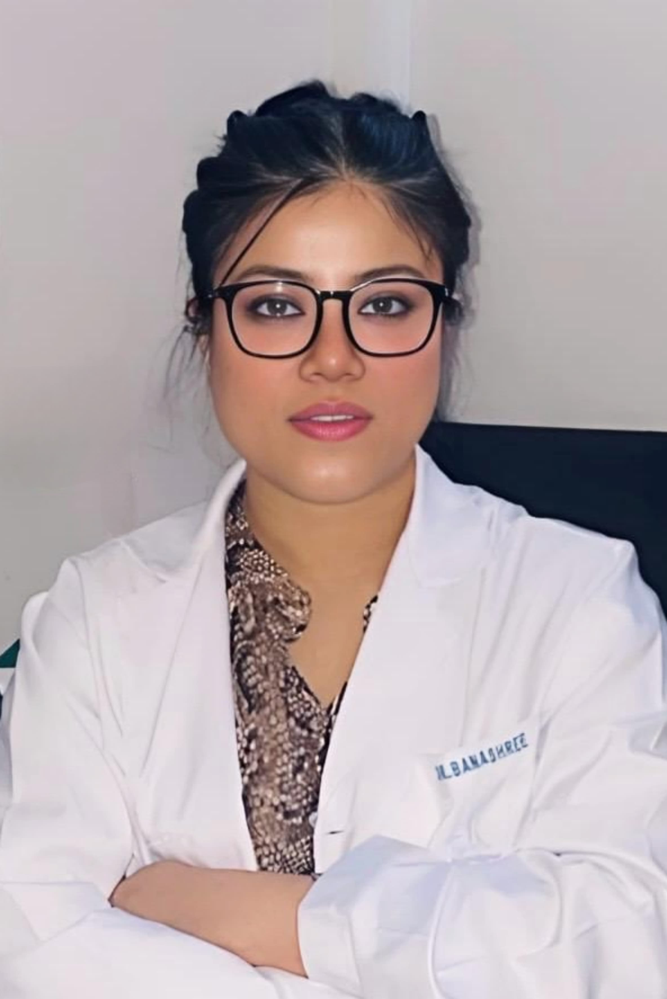

Meet Our Doctors

Dr. Arun Kumar Singh
MBBS, DCH – Pediatrician & Neonatologist
Dr. Arun Kumar Singh is a highly experienced child specialist. He has previously worked at:
- Cloudnine Hospital, Noida
- Safdarjung Hospital, Delhi
- Pratiksha Hospital, Guwahati
- ESI Hospital, Noida
Providing exceptional pediatric and newborn care in Noida, he is committed to compassionate family-centered care.

Dr. Banashree
MBBS, MD (Radiodiagnosis)
Expert in radiological diagnostics including ultrasound, X-ray, and imaging interpretation in Sector 149 Noida.